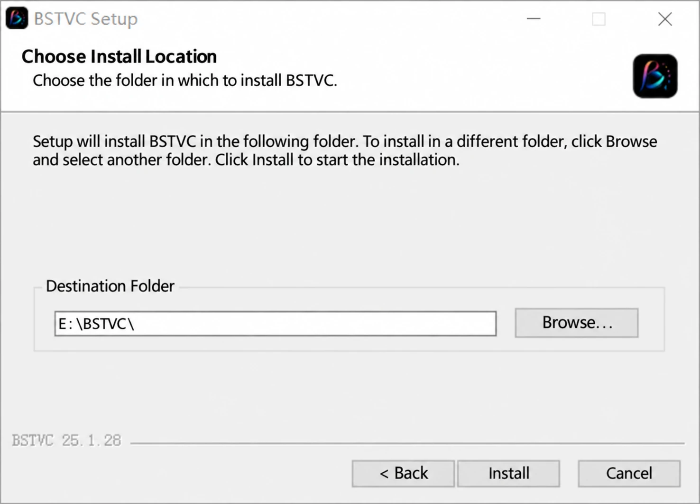
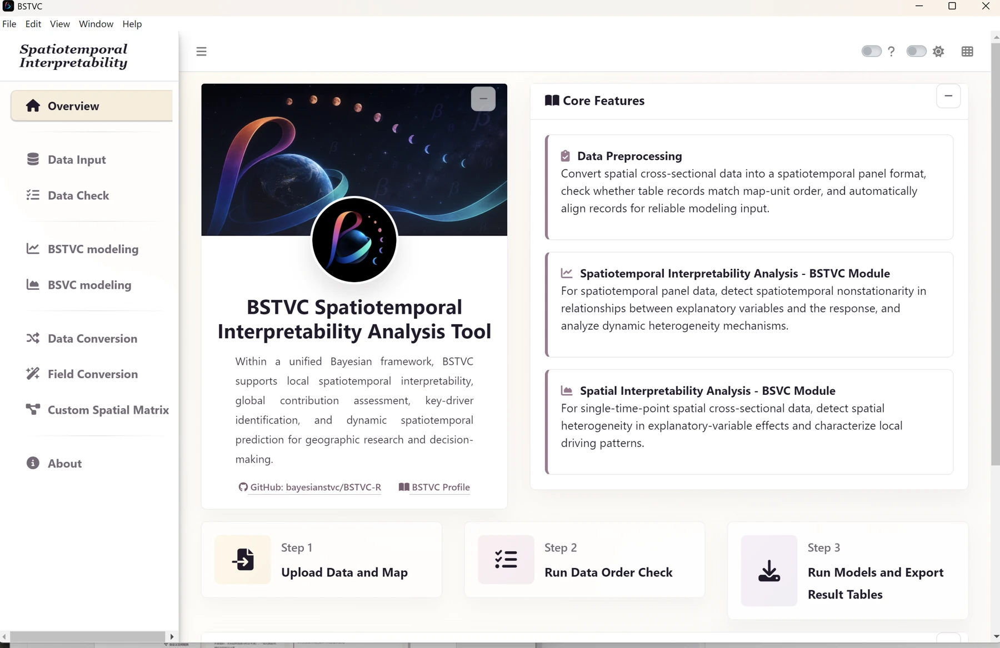
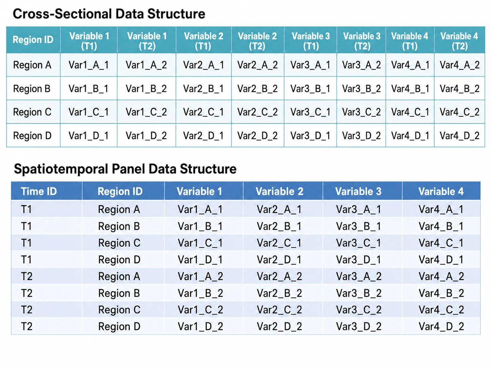

Install & prepare
Set up the desktop application, recognize its modules, and prepare data that the model can interpret correctly.
1. Install the English desktop release
Use Windows 10/11 on an x64 computer. Download BSTVC Desktop English v2026.8.1 from the official GitHub Release. The installer is approximately 548 MB; allow the download to complete before opening it. The examples and online guide are much smaller and can be downloaded separately.
- Open the downloaded
BSTVC_desktop_EN_win_x64_26.08.01_setup.exe. - Choose the installation scope offered by the installer. A system-wide installation may require administrator approval.
- Choose a writable destination folder and select Install.
- Wait for setup to finish, then select Finish and launch BSTVC using its desktop shortcut.
- Open Overview to orient yourself before importing data.
Prefer a simple folder path and keep enough free disk space for the application, input data, temporary computation, and exported workbooks. Model runtime and memory use depend on data size and model settings; the small count case is a useful first check.

2. Find your way around the interface
The left sidebar selects a module. The main panel on the right displays its upload controls, settings, previews, results, and status messages. Begin with the three-step path at the bottom of Overview: upload data and map, check order, then run models and export.
| Module | Use it for |
|---|---|
| Overview | Core features and the recommended workflow |
| Data Input | Import panel data, map components, and an optional spatial matrix |
| Data Check | Match spatial identifiers and align the panel to map order |
| BSTVC modeling | Model panel observations across space and time |
| BSVC modeling | Model spatial variation for a single cross-section |
| Data Conversion | Reshape repeated time columns from a wide table to a long panel |
| Field Conversion | Prepare field names and data types for the model |
| Custom Spatial Matrix | Construct or import a neighborhood structure |
| About | Software information and project contacts |

3. Understand wide tables and panel tables
BSTVC modeling expects one row per spatial unit and time point. A wide source table has one row per region, with columns such as COUNT2012 and COUNT2013. A panel table instead has columns such as GEOID, YEAR, and COUNT, with a separate row for each state and year.
| GEOID | YEAR | COUNT |
|---|---|---|
| 21 | 2012 | 180 |
| 21 | 2013 | 214 |
| 37 | 2012 | 73 |
This small illustration explains the structure only; model input order must still be checked against the map. The global HALE download is already a panel. Both original COVID-19 and hepatitis B workbooks are wide tables. Their packages also contain verified panel CSVs for a shorter first run.

4. Keep all shapefile components together
A shapefile is a collection of companion files, not just a single .shp. For each case, extract the whole ZIP and keep components in the same directory with the same base name. In the map upload control, select all matching components together.
| Extension | Role |
|---|---|
| .shp | Spatial geometry |
| .shx | Geometry index |
| .dbf | Attributes, including spatial identifiers |
| .prj | Coordinate reference system |
| .cpg | Attribute text encoding |
| .sbn / .sbx | Optional spatial index files included with the supplied maps |
The optional US .shp.xml metadata file is omitted from public packages because it contains local workstation paths. All required map components are retained. Avoid renaming a single companion file, opening only a DBF as your modeling data, or mixing components from different maps. Boundary definitions come from the supplied teaching materials; review geographic scope when using them for your own research.
5. Validate before fitting
- Use exactly one row for every intended location–time combination. Remove accidental duplicate keys and check missing periods.
- Ensure the spatial ID exists in both the panel and the map. Match values, field names, and types; preserve leading zeros when present.
- Keep time in chronological order and select the exact time column you created.
- Use numeric response and predictor columns. Encode missing values as
NA, not zero, an empty label, or a localized text string. - For continuous log-Gaussian analyses, check that observed response values are strictly positive. Binary outcomes must be 0/1; count outcomes must be non-negative integers.
- Inspect missingness and variable definitions. Do not assume that an encoded field name is a raw measurement with the unit suggested by its name.
6. Correct field types with Field Conversion
A column that looks numeric in a spreadsheet may be imported as text, particularly when numbers are mixed with literal NA, labels, or inconsistent cell formats. Inspect the field properties after input validation. A response or predictor imported as text can cause a later model error with an unhelpful message.
- Open Field Conversion from the sidebar. Browse to the table that needs correction and select the control to load the field-conversion data.
- Select one or more response or predictor fields that should contain measurements. Choose numeric as the target type for numeric model variables.
- Select Start Field Conversion. Compare the original field properties with the converted properties in the result panel.
- Check the converted values and missing-value counts. Unexpected new NA values indicate cells that could not be interpreted as numbers; correct those source cells rather than silently accepting their loss.
- Download the corrected table with a new filename. Import it again in Data Input, validate it, and rerun Data Check before fitting.
Spatial identifiers have a different role from measurements. Preserve letter codes and meaningful leading zeros, and make their type agree with the map. Do not convert every field to numeric. Field-type conversion also does not rename headers: keep the exact spatial and time field names consistent throughout the workflow.
7. Build and reuse a custom spatial matrix
For the polygon examples, default QUEEN-B adjacency is the shortest route. A point map may have no meaningful polygon contacts. Distance-based or k-nearest-neighbor structures can be more appropriate for some study designs, but the choice should reflect the scientific question and geometry.
- Open Custom Spatial Matrix. Upload the complete map component set and load the map.
- Inspect the reported number of spatial units, geometry type, coordinate reference system, and geographic extent. Confirm that they describe your intended study area.
- Choose the supported matrix type and its parameters. The source workflow describes adjacency, fixed-distance, inverse-distance, and k-nearest-neighbor options. For distance settings, check the coordinate system and the distance units indicated by the application; do not assume degrees are metres.
- Choose the offered weight-standardization setting deliberately. A binary adjacency matrix and a row-standardized matrix encode different weights; record the choice.
- Select Build Spatial Matrix and inspect the resulting neighbor display. Review isolated locations and connections that do not match the study design.
- Download the generated
.rdsmatrix. Keep it with the exact map and your construction settings. - During input/model configuration, supply that matrix through the custom matrix control. Its rows and columns must correspond to the map units in the same order. Rerun spatial checks after changing the map or matrix.
A custom matrix is reusable only with the corresponding unit definitions and order. A matrix built for a different boundary file should not be substituted because its dimensions happen to match. If a k-nearest-neighbor specification fails during INLA computation, review its construction and try a scientifically appropriate alternative in a separately saved run.
8. Understand the nine modeling settings
| Setting | What to choose and record |
|---|---|
| Data Source | Choose Raw Data only when the check reports an already aligned order. Choose Checked Data after automatic rearrangement. |
| Response Variable Y | Select the outcome you intend to explain or predict, not an identifier or a previously predicted outcome. |
| Explanatory Variables X | Select one or more measured predictors with a documented rationale and valid numeric types. |
| Response Type | Match the observed outcome: continuous log-Gaussian, binary logistic, or count Poisson for these examples. |
| Time Field | Select the actual period column; verify chronology and coverage. |
| Space Field | Select the shared spatial ID, with the same name, values, and compatible type in the table and map. |
| Standardize X Variables | The demonstrations use Yes. This expresses predictor changes on a standardized scale; preserve the setting when interpreting magnitudes. |
| Spatial Weight Matrix | Use default QUEEN-B for the demonstrated polygon cases, or a documented custom matrix matching map order. |
| Threads | Start with the demonstrated value of 6 and adjust to available resources; keep the setting in the run record. |
Standardization makes predictor units more comparable but does not make the predictors causally comparable, remedy confounding, or justify choosing variables only by their resulting rank. Complete the case-specific settings table before selecting Run Model.
9. Choose a sensible thread count
The examples use the default QUEEN-B spatial weight matrix: polygon neighbors that touch along an edge or vertex receive a binary adjacency relation. Leave the custom matrix input empty for this route. If the research question calls for distance, inverse-distance, or k-nearest neighbors, use Custom Spatial Matrix and verify that its row/column order matches the map.
Start with 6 threads, as shown in the source workflow. More threads can increase overhead and memory demands. Compare similar runs using BSTVC Process Monitor before adjusting. Do not interpret a frozen-looking result panel as proof of failure while the computation is still active.
Ready to begin? Choose continuous, binary, or count.